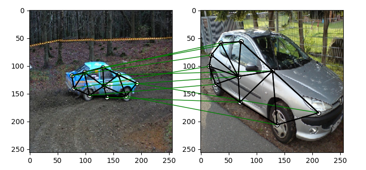

3. Introduction to the practical part of TAB2025#
3.1. Welcome to the practice material of TAB2025!#
In this part of the course, you will learn search techniques and algorithms. All the algorithms you that you will implement in this part are based on the search algorithms that you have learned in the theoretical part of the course. The main goal of this part is to give you a hands-on experience of implementing search algorithms and understanding how they work. We will especially focus on those problems whose nature is NP hard. And we will try to implement a series of techniques or euristics that are able to give us the solution or an approximation to it in an optimal time.
3.1.1. How we are going to start?#
As an engineer, you will have to set up your environment to start working on the practical part of the course. We will use Python as the programming language for this part of the course. You can use any IDE or text editor to write your code. However, we recommend using Jupyter Notebook as it is a very good tool for writing and running code. You can also use Google Colab to run your code in the cloud. This last option is not recommended as it may be slow and you may have to wait for a long time to get the results.
The following libraries are required to run the code in this part of the course:
numpymatplotlibnetworkxscipyeasydictrequeststqdmappdirsPIL
3.1.2. Data Structures and Problems#
In this course we will begin wth the problem of graph matching. We will implement a series of algorithms to solve this problem. We will start with the brute force algorithm and then we will implement a series of heuristics to solve the problem in an optimal time. We will also see all the important variations of the problem (image mathching, subgraph detection, etc) and how to solve them. Regarding the data, in this course we will have to types, annotated images and synthetic data.
3.1.2.1. Annotated Images (Willow-Object-Class Dataset)#
The Willow-Object-Class Dataset is a comprehensive image collection specifically designed for object classification and visual relationship recognition tasks in computer vision. Created to advance research in fine-grained object recognition and interaction understanding, this dataset contains images across multiple object categories with detailed annotations.
3.1.2.1.1. Key Features#
Contains 5 common object categories: Car, Face, Duck, Motorbike, and Winebottle
Each category includes around 40-108 images collected from Flickr and PASCAL VOC 2007
All images are annotated with detailed keypoints specific to each object class
Provides ground truth annotations for object parts and their relationships
Images show objects from various viewpoints and in different contexts
Includes challenging scenarios like occlusion and varying lighting conditions
3.1.2.1.1.1. Download the dataset from here#
4. Grid of Feature Matching Examples#
 |
|
|---|---|
* Car Matching* |
Face Matching |
|
|
Motorbike Matching |
Duck Matching |


4.1. Let’s start with visualizing the data#
In this part of the course, we will start by visualizing the data. We will use the Willow-Object-Class Dataset to visualize the data. We will also see how to load the data and how to use it in our algorithms. We will also see how to visualize the data using the matplotlib library.
# Import necessary libraries
import numpy as np # Import NumPy for numerical operations and array handling
from PIL import Image # Import PIL (Python Imaging Library) for image processing
import scipy.io as sio # Import SciPy's IO module for reading .mat files
# Define target size for image resizing (256x256 pixels)
obj_resize = (256, 256)
# Load duck images from the Willow Object Dataset
# These images will be used for feature matching
img1 = Image.open('./data/WillowObject/WILLOW-ObjectClass/Duck/060_0000.png') # Load first duck image
img2 = Image.open('./data/WillowObject/WILLOW-ObjectClass/Duck/060_0010.png') # Load second duck image
# Load keypoint annotations from corresponding .mat files
# 'pts_coord' contains the coordinates of manually annotated keypoints for each image
# Convert the MATLAB format to NumPy arrays for easier processing
kpts1 = np.array(sio.loadmat('./data/WillowObject/WILLOW-ObjectClass/Duck/060_0000.mat')['pts_coord']) # Keypoints for first image
kpts2 = np.array(sio.loadmat('./data/WillowObject/WILLOW-ObjectClass/Duck/060_0010.mat')['pts_coord']) # Keypoints for second image
# Scale keypoint coordinates to match the new image dimensions
# This ensures keypoints remain aligned when images are resized
kpts1[0] = kpts1[0] * obj_resize[0] / img1.size[0] # Scale x-coordinates of first image keypoints
kpts1[1] = kpts1[1] * obj_resize[1] / img1.size[1] # Scale y-coordinates of first image keypoints
kpts2[0] = kpts2[0] * obj_resize[0] / img2.size[0] # Scale x-coordinates of second image keypoints
kpts2[1] = kpts2[1] * obj_resize[1] / img2.size[1] # Scale y-coordinates of second image keypoints
# Resize both images to the target size (256x256)
# Using BILINEAR interpolation for smooth resizing
img1 = img1.resize(obj_resize, resample=Image.BILINEAR) # Resize first image
img2 = img2.resize(obj_resize, resample=Image.BILINEAR) # Resize second image
4.1.1. Visualizing the Images and Keypoints#
Now that we have loaded the images and keypoints, let’s visualize them using the matplotlib library. We will plot the images along with the annotated keypoints to see how they align with the objects in the images.
def plot_image_with_graph(img, kpt, A=None):
"""
Function to visualize an image with keypoints and optional graph connections
Parameters:
- img: Input image to be displayed
- kpt: Keypoints array with shape (2, N) where N is number of keypoints
- A: Optional adjacency matrix for drawing connections between keypoints
"""
# Display the input image
plt.imshow(img)
# Plot keypoints as white dots with black edges
plt.scatter(kpt[0], kpt[1], c='w', edgecolors='k')
# If an adjacency matrix is provided, draw connections between keypoints
if A is not None:
# Iterate through non-zero elements in adjacency matrix
for idx in np.nonzero(A, as_tuple=False):
# Draw black lines between connected keypoints
# idx[0] is start point index, idx[1] is end point index
plt.plot((kpt[0, idx[0]], kpt[0, idx[1]]), # x-coordinates of line
(kpt[1, idx[0]], kpt[1, idx[1]]), # y-coordinates of line
'k-') # black solid line style
# Create a figure with specific size (8 inches width, 4 inches height)
plt.figure(figsize=(8, 4))
# Create first subplot for Image 1
plt.subplot(1, 2, 1) # 1 row, 2 columns, first position
plt.title('Image 1') # Set title for first subplot
plot_image_with_graph(img1, kpts1) # Plot first image with its keypoints
# Create second subplot for Image 2
plt.subplot(1, 2, 2) # 1 row, 2 columns, second position
plt.title('Image 2') # Set title for second subplot
plot_image_with_graph(img2, kpts2) # Plot second image with its keypoints
The result should be two images side by side, each with keypoints annotated on them. The keypoints are represented as white dots with black edges.

Fig. 4.1 Visualizing the Duck Images with Keypoints#
4.1.2. Exercise#
Now it is your turn to visualize the images and keypoints for the other object categories in the Willow-Object-Class Dataset. You can use the code provided above as a reference and modify it to load and display images from different categories like Car, Face, Motorbike, and Winebottle. You can also experiment with different image pairs within the same category to see how the keypoints align with the objects in the images.
Warning
As you can see, the following exercises are very repetitive. We recommend you to create a function that loads the images and keypoints and another function that plots them. This way you can reuse the code and avoid repetition. Bare in mind that you will need this kind of funtionalities in the next exercises.
4.1.2.1. Exercise 1#
Visualize the images and keypoints for the Car category in the Willow-Object-Class Dataset. Load 8 images from the Car category and display them along with their annotated keypoints.
4.1.2.2. Exercise 2#
Visualize the images and keypoints for the Face category in the Willow-Object-Class Dataset. Load 8 images from the Face category and display them along with their annotated keypoints.
4.1.2.3. Exercise 3#
Visualize the images and keypoints for the Motorbike category in the Willow-Object-Class Dataset. Load 8 images from the Motorbike category and display them along with their annotated keypoints.
4.1.2.4. Exercise 4#
Visualize the images and keypoints for the Winebottle category in the Willow-Object-Class Dataset. Load 8 images from the Winebottle category and display them along with their annotated keypoints.
4.2. Summary#
In this part of the course, we learned how to visualize the data from the Willow-Object-Class Dataset. We loaded images and their corresponding keypoints, resized the images, and plotted them using the matplotlib library. We also saw how to connect keypoints using an adjacency matrix to visualize relationships between keypoints. This visualization is essential for understanding how keypoints align with objects in the images and how they can be used for feature matching and object recognition tasks.